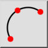

Ez egy automatikus fordítás.
3 pont
Eszköztár / ikon:

Menü: Rajzolás > Ív > 3 pont
Rövidítés: A, 3
Parancsok: arc3 | a3
Leírás
Ha ismeri a kezdőpontot, a végpontot és egy közbenső pontot az ív vonalán, ezzel az eszközzel ívet rajzolhat.
Használat
- Állítsa be a kezdőpontot az egérrel, vagy adjon meg egy koordinátát a parancssorban.
- Állítsa be a második pontot az ív vonalának egy ismert pontjára.
- Állítsa be az ív végpontját.